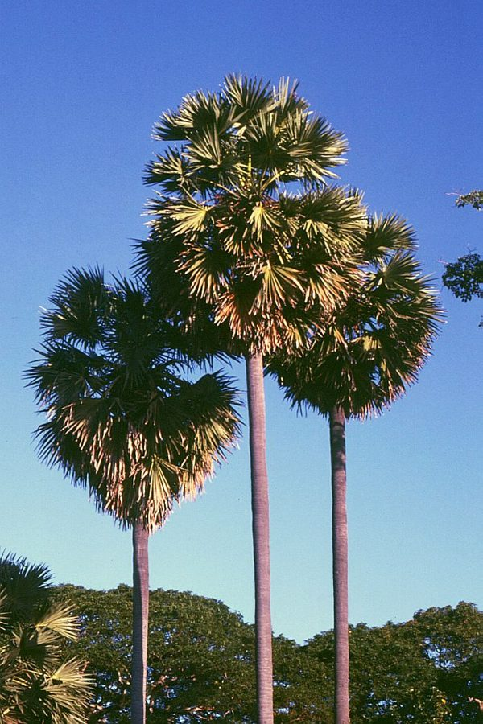

ताड़Palmyra Palm
Borassus flabellifer · Arecaceae · FLR-0108

- Scientific name
- Borassus flabellifer L.
- Family
- Arecaceae
- Hindi
- ताड़
- Local names
- taad, tal, tar, taar ka ped, palmyra
- Status here
- native
- IUCN
- not evaluated
- Review
- audited and independently read
When to look कब देखें
Present all year.
Uses and possibilities उपयोग और संभावनाएँ
Guide: Munja: rope, baskets and mats
“Traditional medicine” means a documented traditional use, not a claim that it works. Nothing on this page is medical advice.
Drawn from the documented uses in the profile below, where each is labelled traditional, current or a research lead. All uses →
ताड़ / Palmyra Palm
Borassus flabellifer L. — Arecaceae
ताड़ — सबसे ऊँचा, सबसे सीधा पेड़ जो पूर्वी ज़िलों के गाँवों के ऊपर पंखे जैसी पत्तियाँ लिए खड़ा रहता है। इसके फूल की डंडी काटकर रस (ताड़ी) निकलता है, फल के अंदर पारदर्शी गूदा (ताड़गोला) खाया जाता है, पत्तियों से पंखे, टोकरी और छप्पर बनते हैं, और तना बल्ली का काम देता है। पुराने ज़माने में इसकी पत्ती पर ग्रंथ लिखे जाते थे।
Quick Identification त्वरित पहचान
| Feature | Description |
|---|---|
| Habit | Tall solitary palm, 15–30 m, trunk straight, black, often slightly swollen above the middle |
| Leaves | Fan-shaped, 1–3 m across, stiff, blue-green, folded like a pleated fan, on a stalk 1–1.5 m with toothed edges |
| Crown | 25–40 leaves in a round head; dead leaves hang in a skirt on young trees |
| Flowers | Male and female on separate trees; male spikes stout, finger-like, in a cluster; female spikes with round flower buds |
| Fruit | Round, 12–18 cm, in bunches, purple-black with a yellow cap of sepals; three jelly-filled seed cavities when young |
| Seedling | A pointed shoot from a deep-buried seed, with a sweet fleshy root (the "tadgola" sprout) |
Field tip: No other tree in the district is this tall and this straight with fan leaves. The wild date palm is shorter, with feather-shaped leaves. Look along the eastern pond banks and old village margins, especially toward the Bihar side, where the palmyra becomes common.
हिंदी — कैसे पहचानें: बहुत ऊँचा, सीधा, काला तना; ऊपर पंखे जैसी बड़ी पत्तियों का गोल गुच्छा। खजूर की पत्ती पंख जैसी होती है, ताड़ की पंखे जैसी। फल गोल, काला-बैंगनी, गुच्छों में।
Morphology आकारिकी
Biometrics (eastern Indian plains):
| Measurement | Range |
|---|---|
| Height | 15–30 m |
| Trunk diameter | 40–60 cm |
| Leaf blade | 1–3 m across, 60–80 segments |
| Leaf stalk | 1–1.5 m |
| Fruit | 12–18 cm diameter, 1–2 kg |
| Age at first fruit | 12–20 years |
Trunk: Unbranched, marked with old leaf scars, very hard and fibrous in the outer layer, which is the usable timber.
Leaves: Palmate (costapalmate, with a short midrib), the segments joined for half their length, the stalk edged with hard black teeth. A leaf lasts about three years.
Flowers: Dioecious. Male inflorescences are branched with thick catkin-like spikes bearing thousands of tiny flowers in pits; female inflorescences are simpler, with large globose flowers. It is the inflorescence stalk, bound and sliced daily, that yields the sap.
Fruit: A fibrous drupe with one to three seeds; the young seed is a translucent jelly (tadgola), the mature seed hard with a hollow. The fibrous orange pulp is eaten and made into cakes.
हिंदी: तना एक ही, काला, बहुत कड़ा; पत्ती के डंठल के किनारे काँटेदार; नर और मादा पेड़ अलग-अलग। फूल की डंडी से ताड़ी निकलती है; कच्चे फल का बीज पारदर्शी जेली (ताड़गोला), पका फल रेशेदार और नारंगी गूदे वाला।
Behaviour & Ecology व्यवहार और पारिस्थितिकी
A palm of the hot lowlands of South and South-east Asia, at home on sand and poor alluvium, enduring drought, flood and wind, and living for a century or more. In the Gangetic plain it belongs to the east: common in Bihar and Bengal, thinning westward, and in the Basti–Ayodhya tract present as scattered planted and self-sown trees rather than groves.
Its crown is a high-rise for birds: Baya Weaver hangs its nests from the leaf tips, parakeets and mynas nest in the old leaf bases, swifts and owls in the crown, and Indian Flying Fox feeds on the sweet fruit and sap. Fallen fruit feed jackals, cattle and insects, and the deep-buried seedling root is dug by rats and people alike.
हिंदी: गरम मैदानों का पेड़, रेत और खराब मिट्टी पर सौ साल जीता है। बिहार-बंगाल में बहुत, पश्चिम की ओर कम। बया इसकी पत्ती के सिरे से घोंसला लटकाती है, तोते-मैना पुरानी पत्तियों की जड़ में घोंसला बनाते हैं, चमगादड़ फल और रस पर आते हैं।
Life Cycle / Phenology जीवन चक्र
| Month / season | Event |
|---|---|
| March–May | Flowering; tapping season for sap |
| June–July | Fruit swells; young fruit cut for jelly seeds |
| August–September | Fruit ripens and drops |
| September–November | Seeds germinate where they fall; the shoot drives a metre down before any leaf shows |
| 12–20 years | First flowering and fruiting; growth of the trunk begins only after years of leaf-building |
हिंदी: गरमी में फूल और ताड़ी, बरसात में फल, बरसात के बाद बीज ज़मीन में गहरे जाकर उगता है। पहला फल बारह से बीस साल में।
Associated Species / Interactions संबंधित प्रजातियाँ
- Nesting birds: Baya Weaver, Rose-ringed Parakeet, Common Myna, Spotted Owlet.
- Fruit and sap feeders: Indian Flying Fox, bees and ants at the cut inflorescence.
- Palm neighbours: Wild Date Palm, the other common palm of the district and the other tapped one.
Pests and Diseases कीट और रोग
- Rhinoceros beetle and red palm weevil bore the crown and can kill a tree; the weevil is the serious one.
- Bud rot after storm damage.
- Rats and squirrels take fruit and seedlings; cattle eat the sweet seedling shoot.
Agricultural / Human Relevance कृषि प्रासंगिकता
Traditional and Ethnobotanical Use (documented uses; not medical advice):
- Sap. Fresh sap (neera) is a sweet morning drink; fermented it is tadi, the palm toddy, regulated as liquor; boiled down it gives palm jaggery (tal gur) and sugar, a traditional industry of Bengal and the south.
- Fruit. The young jelly seeds are a hot-season treat; the ripe pulp is eaten, and in Bengal and Bihar made into fritters and cakes; the sprouted seedling root is roasted or boiled.
- Leaves. Fans, mats, baskets, hats, thatch, umbrellas; and for a thousand years the writing surface of palm-leaf manuscripts across southern and eastern India.
- Timber and fibre. The outer trunk makes rafters, posts and boat ribs that resist termites and water; the leaf-stalk fibre makes rope and brushes.
- Traditional medicine. Sap, root and young plant are recorded as cooling and diuretic in Kirtikar & Basu and Chopra.
Today. The palmyra is the state tree of Tamil Nadu, where a tapping and jaggery economy survives; in the east it is a village resource used casually. Tapping is skilled, dangerous work and is dying out with the tappers.
Research direction (a lead, not a result). Palm sugar and neera as low-glycaemic sweeteners, and palmyra fibre as a composite reinforcement, are studied in India; FAO has reviewed palmyra as an under-used crop. For the district the first question is simpler: how many trees, and whether anyone still climbs them.
हिंदी: रस से नीरा, ताड़ी और ताड़ गुड़; कच्चे फल से ताड़गोला; पत्ती से पंखा, टोकरी, छप्पर और पुराने ग्रंथ; तने से बल्ली जो दीमक और पानी से नहीं सड़ती। ताड़ चढ़ना हुनर है और चढ़ने वाले कम होते जा रहे हैं।
Expected Locally स्थानीय रूप से अपेक्षित
Not a field record. Written from published accounts for eastern Uttar Pradesh. No confirmed local sighting yet — if you have seen it, that is what the atlas needs.
अभी तक स्थानीय पुष्टि नहीं। यह विवरण प्रकाशित स्रोतों से है, किसी अवलोकन से नहीं।
To be expected as scattered trees on pond banks and village margins, more toward the eastern edge of the district, never in a grove. Any tree is easy to confirm from a distance; whether it is male or female, and whether it is tapped, are the details worth noting.
Distribution वितरण
Global range: South and South-east Asia from Pakistan to Indonesia; introduced in tropical Africa and elsewhere.
In India: Throughout the plains and coasts below about 800 m; most abundant in Tamil Nadu, Andhra Pradesh, Bengal and Bihar.
In Uttar Pradesh: Frequent in the eastern districts, becoming scarce westward.
In Basti district / eastern UP: Expected as scattered individuals.
Research Questions शोध प्रश्न
Anyone can investigate these | कोई भी इन प्रश्नों की जाँच कर सकता है
- How many palmyras stand in your village, and are they male or female? / आपके गाँव में कितने ताड़ हैं, नर या मादा? — Count; females carry fruit in August.
- Does anyone still tap them? / क्या कोई अब भी ताड़ी उतारता है? — Ask; record the tapper's method and season.
- Which birds nest in the crown? — Watch one tree at dawn in April.
- How deep does a seedling root go? / बीज की जड़ कितनी गहरी जाती है? — Dig one carefully in November and measure.
- Is the palmyra more or less common than it was fifty years ago? — Ask the oldest residents where trees used to stand.
Similar Species मिलती-जुलती प्रजातियाँ
| Species | How to tell apart | हिंदी |
|---|---|---|
| Wild Date Palm (Phoenix sylvestris) | Shorter, trunk rough with old leaf bases, leaves feather-shaped not fan-shaped, fruit small and date-like | पंख जैसी पत्ती, छोटा फल |
| Coconut (Cocos nucifera) | Feather leaves, curved trunk, large fibrous nut; coastal, rare here | पंख जैसी पत्ती, नारियल |
| Fan palms in gardens (Livistona, Washingtonia) | Fan leaves but trunk slender or shaggy, fruit small; planted ornamentals only | छोटे फल, बाग़ का पौधा |
Field rule: A very tall, straight, black-trunked palm with stiff pleated fan leaves is the palmyra; feather leaves mean a date or coconut palm.
Taxonomy & Classification वर्गीकरण
Original description. Linnaeus, Species Plantarum 2: 1187 (1753). Borassus is an old Greek word for the palm's fruit-spathe; flabellifer, "fan-bearing".
Subspecies. Monotypic — no subspecies are currently recognised; forms differ in fruit size and colour.
Family and order placement. Arecaceae, subfamily Coryphoideae, tribe Borasseae; order Arecales. Borassus has about half a dozen species across Africa, Madagascar, Asia and New Guinea.
Phylogenetic notes. The Asian palmyra and the African Borassus aethiopum are closely related; some authors treated the Asian plant as native to Africa and carried east by people, but current treatments accept it as native across tropical Asia.
IUCN status rationale. Not evaluated. Abundant, but declining as a managed resource where tapping has stopped.
Photo Gallery फोटो गैलरी
Photos needed आवश्यक फोटो
- [ ] Whole tree against the sky (पूरा पेड़)
- [ ] Crown with fruit bunches, August (फल)
- [ ] Leaf products: fan, basket, or thatch (पत्ती का सामान)
Atlas Connections संबंधित प्रजातियाँ
- Wild Date Palm — the other palm, and the other tapped tree, of the district
- Baya Weaver — hangs its nests from the leaf tips
- Indian Flying Fox — feeds on the fruit and at tapping cuts
- Rose-ringed Parakeet — nests in the old leaf bases
References संदर्भ
- Linnaeus, C. (1753). Species Plantarum, vol. 2, p. 1187. Stockholm. [original description]
- Hooker, J.D. (1893). The Flora of British India, vol. 6. L. Reeve, London.
- Blatter, E. (1926). The Palms of British India and Ceylon. Oxford University Press.
- Kirtikar, K.R. & Basu, B.D. (1935). Indian Medicinal Plants, 2nd ed., vol. 4. Lalit Mohan Basu, Allahabad.
- Chopra, R.N., Nayar, S.L. & Chopra, I.C. (1956). Glossary of Indian Medicinal Plants. CSIR, New Delhi.
- Council of Scientific and Industrial Research (1948). The Wealth of India: Raw Materials, vol. 1 (A–B). CSIR, New Delhi.
- Davis, T.A. & Johnson, D.V. (1987). Current utilization and further development of the palmyra palm (Borassus flabellifer L., Arecaceae) in Tamil Nadu State, India. Economic Botany 41(2): 247–266.
- GBIF Occurrence Data — Borassus flabellifer, India (2026).
Source file: species/flora/trees/palmyra_palm.md